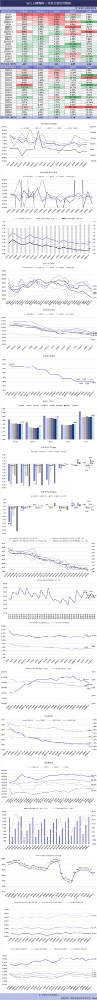
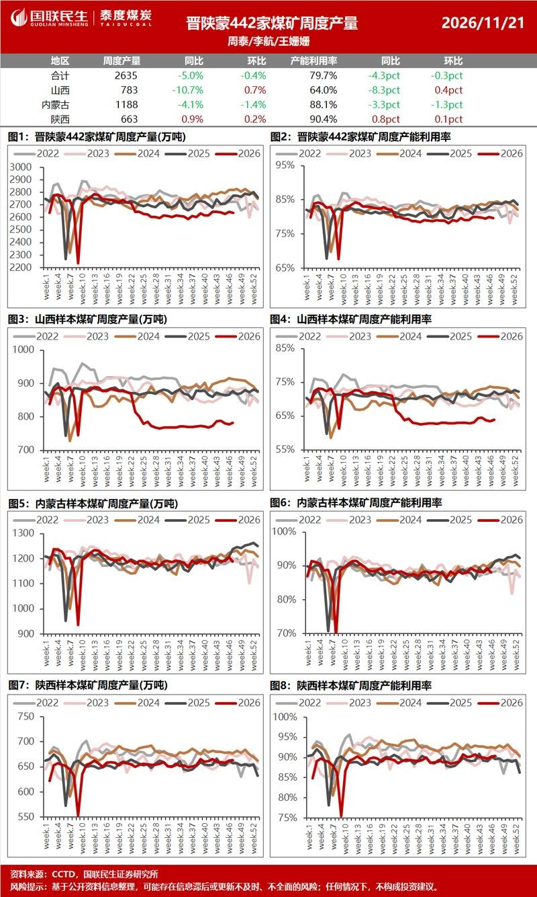
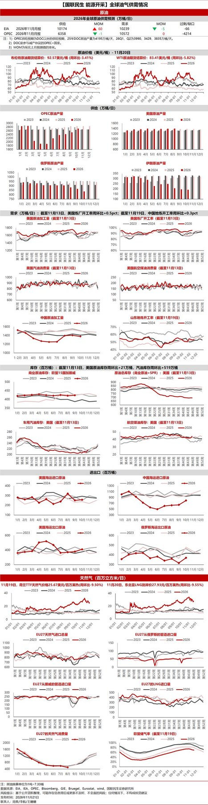

01:04
⏱ 当日快讯
知识星球「调研纪要」· 2026-11-22 · 共 50 条 · 数据截至 08:40 · 08:00–24:00 每小时更新
← 返回研究总览
01:03
#广发银行业倪军团队
26Q3银行业监管数据一张图[玫瑰]
[太阳]净利润同比-0.93%，板块分化延续，国有行/城商行正增长，股份行/农商行承压
[太阳]规模扩张放缓，Q3末总资产同比+6.95%，增速环比-0.53pct，国有行相对稳健
[太阳]净息差持平于1.41%，新发贷款加权平均利率3.03%，环比-2bp
[太阳]资产质量走弱，不良率1.54%，环比+2.0bp；关注率2.27%，环比+5.7bp；拨备覆盖率199.49%，环比-3.38pct。
☎️如需底稿请联系团队成员

01:03
#【广发银行业】
主要ETF银行资金流入跟踪-20261120

01:03
逆变器，组件，电表断路器等出口情况
（无正文）

01:03
【东吴电新】月度锂矿进口到港数据汇总
（无正文）

01:03
铝，产量同比+2.3%、加上进口供给同比+3.6%，表需环比+0.8%、同比+8.3%。
（无正文）

01:03
【国联民生能源 周泰团队】主产地产量同比下降，周环比下降
截至11月15日当周，晋陕蒙442家煤矿周度产量2635万吨，同比-5.0%，环比-0.4%；产能利用率79.7%，同比-4.3pct，环比-0.3pct。
分省份情况：
▫山西：周度产量783万吨，同比-10.7%，环比+0.7%；产能利用率64%，同比-8.3pct，环比+0.4pct。
▫内蒙古：周度产量1188万吨，同比-4.1%，环比-1.4%；产能利用率88.1%，同比-3.3pct，环比-1.3pct。
▫陕西：周度产量663万吨，同比+0.9%，环比+0.2%；产能利用率90.4%，同比+0.8pct，环比+0.1pct。

01:03
【国联民生能源 周泰团队】化工耗煤量同比增速-1.2%，环比增速-0.1%
截至11月20日当周，化工行业合计耗煤708.25万吨，同比-1.2%，周环比-0.1%。其中，甲醇耗煤354.47万吨，同比-3.5%，周环比+0.2%；乙二醇耗煤62.66万吨，同比-2.3%，周环比+2.4%；新型煤化工合计耗煤417.13万吨，同比-3.4%，周环比+0.5%。合成氨耗煤192.78万吨，同比+8.9%，周环比-1.7%；PVC耗煤50.88万吨，同比-14.4%，周环比-0.5%；纯碱耗煤47.46万吨，同比-2.0%，周环比+0.9%；传统煤化工合计耗煤291.12万吨，同比+2.1%，周环比-1.1%。

01:03
⛽【国联民生能源 周泰团队】全球油气供需情况：
1⃣原油：截至11月13日当周，美国原油库存（包括SPR和商业库存）周环比+21万桶，汽油库存周环比+519万桶；美国炼油厂开工率周环比+0.5pct。截至11月19日，中国山东地炼开工率周环比+0.3pct。
2⃣天然气：截至11月20日，中国LNG到岸现货价为27.93美元/百万英热，周环比-9.55%，同比+139.26%；截至11月19日，荷兰TTF天然气期货收盘价为25.67美元/百万英热（即84.46欧元/MWh），周环比-9.50%，同比+157.61%。欧盟储气率为69.59%，周环比-1.41pct，同比-11.10pct。
⏰发布日期：2026年11月21日
⚠风险提示：基于公开资料信息整理，可能存在信息滞后或更新不及时、不全面的风险；任何情况下，不构成投资建议。
☎联系人：国联民生能源开采团队 周泰/李航/王姗姗

01:03
#日耗回落补库渐缓动力煤偏弱运行、铁水续降双焦窄幅震荡
🎁【长江煤炭|本周行业数据更新1121】
【动力煤价格】截至11月20日，秦皇岛港动力末煤平仓价(山西产)为999元/吨，周环比-2.3%；截至11月19日，澳洲5500大卡动力煤价格118美元/吨，周环比+0.5%，折合人民币含税到岸价1064元/吨；截至11月19日，国内外倒挂64元/吨。
【二十五省供耗存】截至11月19日，二十五省电厂日耗526万吨/天，周环比-4.6%；二十五省煤炭库存12077吨，周环比-1.4%；库存可用天数22.9天，周环比+0.8天。
【焦煤】截至11月20日，焦煤价格(京唐港主焦煤)2300元/吨，周环比-2.5%；截至11月20日，终端焦煤库存合计(煤矿+焦化厂+钢厂+沿海5港)周环比-0.1%；截至11月20日，澳洲硬焦煤现货价278美元/吨，周环比-1.4%，折合人民币含税到岸价2096元/吨；截至11月20日，国内价格高于国外204元/吨。
【焦炭】截至11月20日，焦炭价格(日照港一级冶金焦)1980元/吨，周环比持平；截至11月20日，终端焦炭库存合计(焦化厂+钢厂+沿海18港)周环比-1.0%；截至11月20日，全国独立焦化厂吨焦盈利-46元，周环比-26元。
—————————————
👥团队成员：肖勇/赵超/叶如祯/庄越/韦思宇/宋楚

01:03
煤炭行业基本面数据库大全20261121
——————————————
【动力煤：煤价下跌，库存各有增减】截至2026年11月20日，北方港市场煤情况：北方黄骅港Q5500平仓价1006元/吨，较前一周下跌20元/吨（-1.9%）；黄骅港Q5000平仓价899元/吨，较前一周下跌22元/吨（-2.4%）。截至2026年11月20日，秦皇岛库存616万吨，较前一周增加36.0万吨（6.2%）。截至2026年11月16日CCTD北方主流港口库存为3524.2万吨，较前一周减少34.5万吨（-1.0%）；南方港库存2743.4万吨，较前一周减少100.6万吨（-3.5%）。
--------------------------------
【炼焦煤：煤价下跌，库存增加】截至2026年11月20日，京唐港主焦煤库提价（山西产）2360元/吨，较前一周下跌40元/吨（-1.7%）；京唐港主焦煤库提价（河北产）2270元/吨，与前一周持平。截至2026年11月19日，港口合计炼焦煤库存313.9万吨，较前一周增加2.3万吨（0.8%）。
--------------------------------
【海外煤价】截至2026年11月19日，澳洲Q5500离岸价116美元/吨，较前一周上涨1美元/吨（0.5%）。截至2026年11月20日，澳洲主焦煤场地价2230元/吨，较前一周下跌20元/吨（-0.9%）；俄罗斯主焦煤进口平均价1627元/吨，与上周持平；美国主焦煤场地价2100元/吨，较上周下跌20元/吨（-0.9%）；蒙古甘其毛都口岸焦精煤进口场地价1710元/吨，较前一周上涨20元/吨（1.2%）；蒙古甘其毛都口岸焦原煤进口场地价1500元/吨，较前一周下跌20元/吨（-1.3%）。
01:02
【东吴非银孙婷团队】26Q3保险资金运用：逆势加仓股票，债券占比亦提升
1、2026Q3末保险行业资金运用余额为41.6万亿元，较年初+8%，较Q2末+2%。
1）人身险公司投资规模为37.7万亿元，占行业的90.5%。投资规模较年初+8.6%，较Q2末+2.1%。
2）财产险公司投资规模为2.6万亿元，占行业的6.1%。投资规模较年初+5.8%，较Q2末+0.8%。
2、2026Q3单季核心权益增加超1400亿元，主要加仓股票。
1）产寿险“股票+基金”合计余额6.5万亿，其中股票4.2万亿，基金2.3万亿。2026Q3股票+基金规模较年初增加8342亿，其中股票增加5123亿，基金增加3219亿。Q3单季“股票+基金”增加1436亿，其中股票增加1465亿元，基金减少30亿元。我们认为在Q3股市下跌背景下实现规模增长，逆势加仓反映出险企长期投资风格。
2）从占比看，2026Q3末股票+基金合计占比16.3%，较年初提升0.9pct，较Q2末持平。其中，股票占比10.6%，较年初/Q2末分别+0.5pct、+0.2pct；基金占比5.7%，较年初/Q2末分别+0.4pct、-0.1pct。
3、人身险：Q3减配存款、基金与长股投，增配债券及股票。
1）银行存款占比下降，而债券占比提升。2026Q3末银行存款余额占比6.7%，较年初/Q2末分别下降1.0pct、0.4pct。债券占比为52.2%，较年初/Q2末分别+1.1pct、+1.0pct。
2）核心权益占比稳定，股票继续增配。
2026Q3末股票+基金合计占比16.1%，较年初提升0.8pct，较Q2末持平。其中，股票占比10.6%，较年初/Q2末分别+0.5pct、+0.1pct；基金占比5.5%，较年初/Q2末分别+0.3pct、-0.1pct。
3）长股投占比为7.7%，较年初/Q2末均下降0.1pct。
4）其他类（非标为主）占比为17.3%，较年初/Q2末分别下降0.9pct、0.5pct。
01:02
【生物类似药集采跟踪】全国单抗集采第1号公告发布，正式启动信息申报
📍 事件：
11月21日，全国单抗类集采第1号公告发布，覆盖阿达木、贝伐珠、曲妥珠等7个通用名、15个品规。企业信息申报时间为11月24–27日。标志着全国单抗集采正式进入实操阶段。
🔍 点评：
1️⃣ 集采推进节奏加快，竞价细则仍待明确。
本次公告距9月征求意见稿约两个月，正式启动企业信息申报，申报窗口仅4天。现阶段主要涉及企业资质、产品及产能信息，尚未公布最终竞价、中选及分量规则，具体降幅仍存在不确定性。
2️⃣ 按厂牌报量明确，存量份额有望形成竞争优势。
公告明确，企业信息申报是医院按厂牌报量的前置环节。参考9月征求意见稿，按厂牌报量结合多重复活及带量机制，有望强化存量市场份额的重要性，具备医院覆盖和既有销售基础的企业具备一定竞争优势。
3️⃣ 生产合规及知识产权门槛强化。
申报要求企业具备2年以上单抗注射剂生产经验。此外，无法作出知识产权“无侵权承诺”的产品面临撤网或限制挂网风险。规则有利于具备成熟商业化、生产及质量体系的企业。
4️⃣ 包装规格承诺纳入申报要求。
企业须承诺提供满足功能需求、方便医患使用的包装规格，且中选后不得降级变更，规格组合的临床便利性有望成为报量阶段的差异化因素。
📌 展望：
1️⃣9月征求意见稿提出“按厂牌报量、双锚点定价、多重复活”的竞价框架，并根据中选情形确定带量比例，整体体现稳临床、保质量、反内卷、防围标的政策导向。
2️⃣若后续正式方案延续上述框架，预计本轮集采相较传统化药集采更重视供应稳定及存量市场格局，价格竞争有望相对理性，但具体降幅仍需结合正式竞价规则判断。
🔗 文件链接：
第1号公告（2026.11.21，安徽省医药集中采购平台）：
全国药品联盟集中带量采购（单克隆抗体类） 公告（第1号）
[玫瑰]风险提示：正式竞价规则变化；集采降价超预期；企业中选及约定采购量不及预期。
01:02
美股：像2000年还是1994年？
虽然历史不会简单重复，但是在持续下跌之后，情绪化类比2000年，我们认为存在很大的误导性。
本轮以费城半导体指数为代表的美股自23年以来持续大涨，底层驱动源在AI需求爆发，而AI需求爆发的底层驱动在于AI技术进步。
因此，在进行对比时，视角应基于AI技术的发展阶段延伸，以此为出发点，当前根据类比价值的是90年代初附近。
康波周期的本质是技术扩散周期，上一轮技术抓手是信息技术。
信息技术的应用端发展，经历了集中大型机、桌面 PC、移动互联网 、云计算等几个阶段。其一，应用端的层层进步是贯穿几十年的历程；第二，每个应用的突破都伴随着对半导体需求的拉升。继而整个信息技术时代，纳斯达克指数和费城半导体指数的涨幅都是在百倍以上。
2000年信息技术所处的阶段是桌面PC渗透率接近一半，看未来几年的硬件需求确实找不到新的增长点，直至2008年附近开启移动互联网时代。（有个规律，往往在康波衰退期附近形成本轮技术最成熟的应用载体。）
技术突破决定需求，需求决定趋势，而供给主要影响节奏。从这个角度看AI，Coding仅仅是第一个应用突破，展望未来几年需求难以见到天花板，令市场担忧的融资、产能、电力等都集中在供给层面。
因此，当前跟2000附近信息技术的产业发展阶段完全不同。
我们认为，当前更可类比的是90年代初附近，如果结合美联储加息背景，跟1994年有一定类似之处，当然历史不能简单对比。
整体而言，当前制约AI发展的核心不在需求，在于供给（融资、产能、电力等），供给影响节奏，需求主导趋势。
这几个月快速消化估值和拥挤度压力后，我们建议将视角回归到需求端积极把握机会。
风险提示：AI技术进展不及预期。

01:02
海外政策调整，中国 AI 的方向不变
近期海外 AI 板块出现波动。我们的观点没有变化：这是海外自身的政策与市场问题，不改变中国 AI 的既定方向。
海外近期连续收紧 AI 芯片出口限制，先受影响的是自己的企业。相关龙头公司已确认，上一季度约 24 亿美元来自中国的数据中心产品收入，已不计入下一季度的营收预期。同期其国内两党议员也在出口议题上竞相施压。收紧的代价，首先落在自己一侧。
AI 是长期投入，全球在算力与模型上已持续投入多年。中国的方向也已明确："十五五"规划提出全面实施"人工智能+"行动，新一代智能制造的政策措施正在研究制定，首批 136 项重大应用场景已经推出。我们理解，近期海外市场的波动，是股市在重新评估投入多久能见到回报，并不是科技本身出了问题。
更根本的差异在应用落点。算力、模型、数据与工程化是共同的底座，这一层有自身规律，投入与试错都没有捷径。在此之上，把能力优先投向哪些场景、先回应哪些需求，就不只是技术判断，也是发展方向的选择。
中国的政策选择，是把主战场放在制造业。工信部等八部门印发的《"人工智能+制造"专项行动实施意见》，明确以人工智能赋能新型工业化；"十五五"规划纲要也要求全方位赋能千行百业。政策一手抓技术供给、一手抓落地应用；真实产线既是技术的落点，也是迭代数据的来源。
人工智能赋能新型工业化，这条主线没有变。
外部如何选择是其内部事务。我们沿着既定方向前行，跟踪重点仍是政策预期与落地节奏，观点不变。
重点关注：敏芯股份、上纬新材、中控技术、宇树科技、索辰科技；
建议关注：东土科技、宝通科技、能科科技、海康威视、海天瑞声、杰克科技、阿尔特等。
01:02
头部险资机构组织的同业交流纪要
近日，某头部险资组织同业机构内部交流，涉及险资年末减仓进度、权益资产配置、科技股持仓调整、高股息投资方向，以及保险行业负债成本与偿付能力压力等问题。
以下几点值得重点关注：
1、险资集中减仓已接近尾声。 今年险资减仓时间明显提前，9月底已有大型险企开始卖出，10月至11月中旬进入集中减仓阶段。目前部分险企已完成大部分减仓，流动性相对充裕，但尚未出现明确的重新加仓动作。
2、科技股减持主要受内部风控及考核机制影响。 部分险资并非主动看空科技，而是在持仓比例、收益波动及偿付能力等约束下被动调整。即使科技股出现反弹，也不意味着险资会立即回补仓位。
3、高股息资产仍是后续重点配置方向。 在长端利率持续下行、优质固收资产收益率不足的背景下，具备稳定现金流和较高分红收益率的权益资产仍有配置价值。
4、保险行业资产负债端的利差压力持续加大。 当前部分险企负债成本仍在3.0%—3.2%左右，而10年期国债收益率仅约1.5%，资产端收益率与负债端成本之间的矛盾日益突出。
5、中小险企面临的偿付能力与资产配置压力更为明显。 相较于大型险企提前锁定长期债券收益，中小险企在低利率环境下面临更大的再配置压力，部分机构偿付能力充足率出现明显下降
01:02
长江银行马祥云团队 | 本周宽基指数基金大幅净流入，上证50显著放量
本周宽基指数基金重新大幅净流入，沪深300/上证50指数基金分别显著净流入1024/227亿元，单周净流入规模均为2024年底以来最高水平。其中周五（11/20）单日，分别净流入424/215亿元。同时，中证1000/科创50指数基金本周分别净流入106/177亿元。
上证50指数基金周五单日净流入规模达到2024年底以来最高水平，对上证综指3500点位形成支撑。此前在2024年初、2025/04等风险偏好大幅下行的阶段曾连续净流入。银行股在上证50指数中的最新权重高达20%，指数基金大规模净流入对权重银行股价影响显著。
截至11月20日，基于跟踪的248只产品数据测算，沪深300指数基金总规6803亿元（2025年末13457亿元）。三季度以来银行股估值修复，在沪深300的权重回升至13.8%，测算沪深300指数基金持有银行股规模回升至938亿元（2025年末1619亿元），目前持股单只银行占自由流通股比例回升至3%左右。
数据库详询长江银行团队马祥云/盛悦菲/谢金彤/李雨昂
01:01
【中金电新】新能源车中游2027年展望：拨云方见日，择势觅新机
我们认为，27 年锂电需求或没有市场预期悲观、产业链供需仍然存在结构性约束，部分材料环节基本面有望维持稳健，电池环节伴随与下游客户税费分摊机制达成、盈利亦有望逐步迎来修复，我们仍然看好 27 年板块配置机遇：
27年锂电需求不悲观，供给仍存结构性约束。我们认为27年国内动力电池需求在商用车电动化、乘用车出口以及纯电结构性增长下具备韧性，储能需求迎来政策边际改善；海外在碳排、能源安全等驱动下能源转型有望加速，动力电池、储能需求有望保持高景气；我们中性预期27年锂电需求同比增长23.4%。供给方面，尽管27年产业链新增产能集中释放，但供需关系或难全面转向宽松，隔膜、负极，以及细分的新品方向存在结构性约束。
基本面27年进入分化阶段，供需格局较好以及海外业务放量环节有望实现盈利稳健。我们认为在27年产业链供需关系边际宽松趋势下，产业链基本面或将进入分化阶段，供需格局较好的隔膜、铜箔等环节有望维持基本面稳健；电池环节伴随税费传导盈利亦有望修复；此外，具备海外产能的环节或者企业，有望支撑海外业务加速放量，进而带动盈利结构改善。
新技术看好钠电和固态电池产业化持续推进。固态电池板块历经2026年调整、估值充分消化，我们预计2027年有望迎来小批量装车的产业催化、产业进展提速；钠电池在头部电池厂引领下，产业链有望迎来1到10规模化放量，适配储能、启停、低速交通等多元应用场景。
当前板块估值层面已先于基本面进入底部区间，较充分记入对27年基本面的悲观预期和市场情绪，板块估值已具备较高性价比。投资策略：
1、把握预期改善下的板块估值修复机会、看好供需格局较好的环节，推荐电池、泛零部件、隔膜、铜箔、负极环节；
2、把握海外高景气带来的Alpha收益；
3、把握新技术产业化加速落地的机遇，继续看好固态电池和钠电池产业化突破。
欢迎交流：王颖东/曲昊源/于寒/季枫/杜懿臻
01:01
行业更新：AI 材料增长的行业逻辑跟踪与梳理（上）
1.全球股市回撤抬升股权风险溢价，AI新材料链进入交付与回款的重估期。现金流强的大云可延后交付，依赖融资的算力租赁商更受利差与再融资窗口影响；项目延期先推迟机架与材料排产，取消则同时冲击采购量与设备利用率。
2.云厂商资本开支延续，持续性取决于AI变现与实际现金回收。四家2026年开支指引合计约7,200–7,400亿美元，2027年普遍继续增加；腾讯Q3资本开支付款651亿元、同比+225%，阿里505亿元、+60%。已披露AI收入口径不一（运行率、确认收入、订单、到账现金），尚不足以证明下一轮开支由AI独立负担，短期仍靠集团现金流、预付款与融资承担。现金承受力是硬约束：四家近12个月经营现金流约6,768亿、现金资本开支约6,143亿，占比91%，余量约625亿且未分配股息回购，故7,500亿级尚有内生路径，更高规模依赖现金流提速与融资。单批资产每1,000亿美元投资年化回收约246亿，需年新增收入410–615亿；付费量增80%、单价降40%，收入仅增8%。材料收入应沿"资金获批—机房通电—采购条件—实物交付—认证结算"跟踪。
3.英伟达需求与指引仍强，本周大跌属治理、会计与出口风险。FY27 Q3营收1,158亿美元、同比+103%，下季指引1,300亿美元上下3%；应收与存货占用上升，需关注逾期、回款与新机架验收。BIS新规短期压低跨境交付与云租用可得性，国产替代意愿提高，材料总量影响可控。
4.Anthropic上市净募资约1,170亿美元，公开算力采购承诺约9,009亿美元、未来12个月约707亿；融资支持近期履约，持续回款看付费使用量、单位推理收入与利用率。
5.国产替代：先落在推理与部分后训练，预训练决定新增空间。2026年国内GPU需求约300–400万颗，2027年预计增速30%+，950系列2027年有望超100万张；最快验证的是服务器板、散热、连接与电源，高阶材料受良率与制程进度制约。
01:01
电池组件出口：10月电池出口加速，组件受益于中东需求释放
1、根据盖锡咨询，10月组件出口21.49GW，同比+19%，环比-14%；电池出口14.57GW，同比+37%，环比+21%；电池+组件出口36.06GW，同比+26%，环比-2%。1-10月组件累计出口199.14GW，同比-4%；电池累计出口99.92GW，同比+15%；电池+组件累计出口299.06GW，同比+2%。
2、组件方面，10月出口欧洲5.34GW，同比-6%，环比-31%；非欧美市场15.71GW，同比+29%，环比-7%。其中，沙特阿拉伯4.05GW，同比+813%，环比+23%；阿联酋1.16GW，同比-8%，环比+54%；巴西0.91GW，同比-21%，环比-10%；澳大利亚0.60GW，同比+29%，环比-23%；菲律宾0.55GW，同比+64%，环比-43%。
3、电池方面，出口以美国、肯尼亚、印尼、菲律宾为主。其中，美国3.45GW，同比+3227%，环比+173%；肯尼亚3.20GW，同比+10805%，环比+10%；印尼2.20GW，同比-33%，环比+7%；菲律宾1.87GW，同比+116%，环比+29%。近期光伏电池出口流向美国以及非洲区域增长明显，此类区域多作为跨境中转节点。
01:01
光伏主产业链重点公司及行业动态日报1120
[庆祝]行业动态：
1. 11月18日，江苏省政府印发《美丽江苏建设"十五五"规划》，提出到2030年非化石能源消费占比提高至少5个百分点，风电、光伏装机达1.98亿千瓦、核电装机达900万千瓦，高耗能企业绿色电力消费占比达30%以上。
2. 11月20日，自然资源部、国家发改委、人民银行、金融监管总局、证监会等五部门印发《海洋产业投融资指导目录（2026版）》，鼓励发展海上风电、海洋能等可再生能源，并将海上风能、光伏、海洋能、氢能、渔业、海底算力等业态融合开发项目列为前沿方向。
3. 11月19日，华北能源监管局印发《蒙西电力市场调频辅助服务交易实施细则》（2026修订版），调频量价补偿费用按"日清月结"结算、规模上限1亿元，由省调直调公用煤电机组、风电场、光伏电站、独立新型储能电站按月度上网电量比例分摊，扶贫项目不参与分摊。
4. 近日，无锡产业发展集团旗下国有控股企业日托光伏向无锡市中级人民法院提交破产重整申请，目前处于破产申请审查阶段、法院尚未裁定受理；公司成立于2012年，布局MWT背接触技术路线，主营光伏电池及组件、轻质组件，建有无锡、徐州、南京三大生产基地。
[庆祝]公司动态：
【通威股份】11月20日董事会通过回购方案，拟集中竞价回购10亿至20亿元，价格不超17.20元/股，用于员工持股或股权激励，预计回购5813.95万股至1.16亿股、占总股本1.29%至2.58%，期限6个月内、无需股东会审议。
【晶科能源】11月20日以2.00元/股向1290名对象首次授予2.34亿股第二类限制性股票，占股本总额2.29%，并因120名对象失去资格相应调整激励计划。
【新特能源】联营公司准东特变能源拟以北一电厂项目为底层资产，在上交所申报发行机构间REIT，公司持其49%股权、拟将部分或全部股权出售予管理人，规模与对价待评估及监管审核确定，或构成须予公布交易。
[太阳]今日行情：上证综指：-1.22%；沪深300：-0.76%；光伏行业指数：-3.27%
01:01
[玫瑰]【近期新闻及政策动态】
①11月16日，国家统计局发布2026年1-10月国民经济数据。固定资产方面，1-10月份，全国固定资产投资（不含农户）364,824亿元，同比下降8.1%；扣除房地产开发的固定资产投资下降5.1%。
[玫瑰]【重点公司动态】
①中国核建：经营情况，公司披露1-10月经营情况，公司新签合同727.52亿元，较上年同期下降41.3%，实现营业收入717.81亿元，较上年同期下降11.7%。
②中国建筑：经营情况，公司披露1-10月经营情况，新签合同总额35,862亿元，较上年同期增长-0.6%，其中建筑业务部分新签合同额33,219亿元，较上年同期增长0.1%。
③安徽建工：项目中标，公司作为牵头人中标“新安江航道综合整治提升工程特许经营”项目，项目总投资约34.06亿元，本公司及所属子公司在项目公司中出资比例为30%。此外，子公司建工水利中标“G36宁洛高速大刘郢枢纽至望疃枢纽K246+729.581～K289+131.003段改扩建工程NLHL-04标”，金额6.92亿元。
[玫瑰]【债券发行】
①专项债：截至11月20日，专项债累计净融资32,158亿元，净融资低于去年同期；累计新发行40,101亿元，已完成全年发行进度的91%，同比25年放缓4pct，同比近三年平均进度放缓7pct。
②城投债：截至11月20日，城投债累计净融资495亿元。
③特别国债：截至11月20日，2026年特别国债累计发行6,520亿元。
01:01
[庆祝]【广发家电】扫地机德国亚马逊黑五情况跟踪（仅统计Bestseller TOP20机型，20261120）
【石头】平均折扣力度85折，畅销机型共8款，平均排名第7
【科沃斯】平均折扣力度87折，畅销机型共4款，平均排名第10
【追觅】平均折扣力度98折，畅销机型共5款，平均排名13
具体统计情况详见上图👆🏻平均排名为各品牌对应畅销sku的排名的平均值~
#我们认为： 数据显示追觅黑五几乎没有打折，石头、科沃斯折扣力度合理，石头畅销机型的数量领先、排名靠前。#海外竞争趋缓，#格局改善趋势将延续，#继续推荐石头科技，#同步关注科沃斯投资机会，更多观点欢迎沟通。
[玫瑰]资料来源：亚马逊
[玫瑰]风险提示：第三方数据不代表公司口径；数据统计误差等。
[礼物]欢迎联系广发家电团队：张云添/文煊18722077892/芦家宁/韩朗讯
01:00
[烟花]回调后，哪些成长性个股值得配？【财通食饮】
#食饮收入明年双位数增长确定性较强的个股推荐：
安琪酵母：海外和酵母蛋白贡献主要增量。利润端，近期人民币贬值和海运费有边际改善，明年利润弹性可期待。预计27年收入/利润+13%/17%，PE 17x。
百龙创园：泰国新产能释放带来业绩增量，膳食纤维、阿洛酮糖等健康原料需求潜力空间巨大。预计27年收入/利润+18%/25%，PE 16x。
西麦食品：燕麦产业趋势和集中度提升利好公司，食养粉有望贡献增量。产品结构和费效改善对冲成本上行。预计27年收入/利润+17%/20%，PE 17x。
晨光生物：辣椒红、叶黄素涨价带来27年利润弹性，定制化产品及梯队产品高增改善产品结构。预计27年收入/利润+7%/40%，PE 11x。
泉阳泉：矿泉水主业在辽宁、黑龙江、北京等区域高速扩张，大客户及线上渠道表现亮眼。预计27年收入+22%，利润考虑剥离3e+，PE 18x。
有友食品：零食量贩和山姆新品贡献增量，净利率有望底部改善。预计27年收入/利润+20%/15%，PE 17x，股息率5%+。
宝立食品：大B定制持续贡献稳定增长，C端和并购是期权。预计27年收入/利润+10%/10%，PE 16x，股息率4%+。
联系人：财通食饮 吴文德
01:00
🔥【国金机械】海油工程：再落卡塔尔8亿美元海管大单，中东累计签约破 500 亿
📌 事件：海油工程11 月 20 日公告，公司与卡塔尔能源签署 "MM-EPIC2" 总包项目合同，金额约 8 亿美元（人民币 53.7 亿元）。建设内容包括逾 100 公里海管、电缆、脐带缆的铺设及相关设施安装，公司承担项目管理、详细设计、采购、施工、运输、安装及预调试等总承包内容（EPIC）；建设期限 66 个月，按实际施工进度以月度方式支付。公司表示该合同将进一步提升其在卡塔尔的市场份额与客户粘性，为"十五五"海外战略规划奠定基础。
🎁 点评：我们认为，本次签约的价值大于金额本身。
#量级上，8 亿美元约合 53.7 亿元，相当于公司三季报在手订单 727 亿元的约 7%，对应三季报里"中标卡塔尔 MM EPIC 2"的正式落地，签约后中东区域累计签约订单已突破 500 亿元。卡塔尔市场从"单项目中标"升级为 BH（约 40 亿美元）、RUYA EPCI 09、MM-EPIC2 的多项目组合，客户关系由一次性中标转向框架性准入，"十五五"海外收入中枢有望系统性上移。
#能力卡位上，EPIC 模式把详细设计、采购、安装调试一并交给业主，管理层级与价值量显著高于纯施工分包；卡塔尔大单的国际对手（McDermott、现代重工、L&T）多聚焦上部组块与平台总装，"海管+海缆+脐带缆"管线安装细分包正是中国海油工程海管制造、铺管船、缆总成一体化能力的靶心，凸显了中国海工装备国际竞争力提升。
☎国金机械：满在朋/房灵聪18361753245
01:00
泸州老窖更新
1、2027财年回款要求有增长，但幅度不大，主要以去库存为主，去化30%的库存，至合理水平（3个月），当前库存5-6个月。
2、国窖公司等平台打款价格已经下调，并增加对其费用支持力度，解决平台亏损问题，同时补贴终端门店因税务合规等提升带来的经营压力。
3、公司推出年份15年国窖礼盒装产品，定价3399元/两瓶。
01:00
台湾扩大卖空限制，此前股市因人工智能担忧而暴跌
（无正文）

00:59
Anthropic 崩盘后，华尔街追问什么能拯救 AI 交易
（无正文）

00:59
欧盟考虑对科技巨头征税以增加预算
（无正文）

00:59
软银孙正义曾探讨对SK海力士的1万亿美元登月式收购
（无正文）

00:59
化工圈消息，日本经产省召集日本三大头部醇醚溶剂企业召开闭门通气会，以窗口指导方式传达出口管控要求。核心要求从2027年起，面向中国大陆市场的高端醇醚溶剂出口配额...
化工圈消息，日本经产省召集日本三大头部醇醚溶剂企业召开闭门通气会，以窗口指导方式传达出口管控要求。核心要求从2027年起，面向中国大陆市场的高端醇醚溶剂出口配额整体收缩约50%，产能优先保障日本本土晶圆厂及美系半导体客户供给。
内部执行按客户属性分三档差异化管控：
台资在大陆晶圆厂（含成熟制程产线）配额下调35%-45%，此前谈定的扩产配套增量全部不予批复。
大陆本土12英寸逻辑、存储晶圆厂配额下调50%-60%，仅保留基础保供量，先进制程产线的新增需求原则上不予受理。
贸易商渠道及中小终端客户全面暂停新增配额审批，存量老客户仅维持历史最低拿货基数，散单增量需求全部直接驳回。
目前2027年度长单谈判已全面按该配额标准执行，日系厂商对外统一维持供货正常、按需接单的公开口径，官网报价、公示交期暂未做调整，但实际签约额度已大幅收紧。
此次收紧的原因是高端醇醚溶剂短缺及日本半导体材料出口管制的补漏动作，与此前高端光刻胶限制对华出口一脉相承。此前日本已对ArF及以上级别的高端光刻胶成品实施严格出口限制，审批周期大幅拉长、新增订单基本冻结，但光刻胶配方中占比超80%的核心溶剂并未同步纳入管控范畴。国内光刻胶厂商仍可通过进口日系高纯溶剂完成配方复配与量产，一定程度上弱化了成品管制的实际效果。此次将高端溶剂纳入配额收缩，本质是管制链条从终端成品向上游核心原材料延伸，补齐此前的政策缺口，操作路径与当年分步收紧半导体材料的手法完全一致。
00:59
如果这里就是AI军备竞赛的尾声，那只能说今年上半年的AI真像一个收割全球的阳谋
不管初衷如何，事实上就是P用极其陡峭的资本开支，耗尽自己2年的自由现金流，拉出一个极其夸张的上游硬件利润率水平，制造了一个本身这些大宗硬件不该有也不曾想到的周期高度，然后讲了一个极其令人FOMO的AI星辰大海的故事，最终让经历了N轮周期，极其谨慎、不愿意轻易扩产的日本、韩国、台湾产业老兵都被骗进来大幅扩产，更不用说把扩产写进基因里的我们中国企业家。那这次P真是用2年的阵痛，换取了可能未来10年都起不来的硬件价格，这又是一次下游生态公司的胜利。独留东亚扩产资本在风中凌乱。
00:59
贷款机构收紧neocloud融资，将贷款价值比从80%降至50%至60%，迫使买家转向现货市场，反而推高GPU租金。租金上涨又支撑GPU资产估值，但初创公司的算...
贷款机构收紧neocloud融资，将贷款价值比从80%降至50%至60%，迫使买家转向现货市场，反而推高GPU租金。租金上涨又支撑GPU资产估值，但初创公司的算力采购仍依赖风投资金，token价格却持续下跌，融资收缩与需求脆弱可能形成恶性循环。
GPU租金持续飙升，背后可能不是AI算力需求有多强，而是融资渠道收紧造成的供给收缩。
Liquid Compute首席产品官Stanley Lee近期在Odd Lots播客中指出，当前GPU现货和短期租金更多反映资金成本，而非底层需求变化。贷款机构收紧对中型新型云服务商（neocloud）的融资条件，迫使无法获得长期贷款的买家转向短期现货市场，反而推高了可见租金。
融资条件的变化已经相当明显。贷款机构对neocloud的贷款价值比（LTV）已从今年夏季的80%降至目前的50%至60%。与此同时，CoreWeave信用违约互换（CDS）利差扩大至约1300个基点，其2031年到期债券收益率升至16%。
00:58
摩根大通——亚洲电气设备：关于得州数据中心/电力基础设施发展的专家电话会核心要点
得州监管机构恢复数据中心环境许可审批（路透社报道），SpaceX位于Starbase的大型数据中心项目已获空气污染许可（Politico报道）。报告基于本周与一家得州电力公司高管的专家电话会，聚焦美国中期选举后得州数据中心发展前景。据BNEF，得州占美国数据中心储备管线的20%以上（逾50GW）。
一、政策展望
因州政府政治控制分裂、共和党保有参议院控制权，专家预期更重大的政策变动仍将受限。但州长可能对新增项目施加更严格的环境管控，或造成数月延迟，而非直接取消。
自选举以来，反数据中心立场有所缓和；鉴于得州亲商、亲能源的基调以及相关的就业与税收，彻底叫停难以落地。政治控制权与委员会领导层更替本身，亦可能放缓早期立法会的决策节奏。
项目风险存在分层：已满足既有要求的项目风险较低；距获批较远的项目——包括部分目标2028–29年投产者——更可能面临附加要求或延迟。
二、环境要求
环境要求或为放缓数据中心开发最直接的杠杆。大型开发商为抢占通电时间，此前尽可能快速获取各类电源，部分情形下为小型、老旧、低效的热电厂，作为长周期电源到位前的过渡电力。
专家认为，环境机构可能收紧此类资产的许可运行时长或容量因子。相较彻底禁令，政策或允许开发商在初始爬坡期使用此类机组，随后过渡至更清洁、更高效电源，并将其保留为备用。
既有许可、场址/设备控制及用水要求料将延续，并存在进一步收紧的可能。
三、供电与通电时间
混合供电与负荷灵活性仍是加速通电的关键。专家预计大型数据中心将电网供电与表后发电结合，以短周期电源作过渡，直至更高效机组可用。
鉴于可再生能源的可靠性局限，可调度发电仍属必要；能够在电网承压时削减负荷的项目，亦更可能获得更早接入。
相较吉瓦级园区，更小规模的分布式场址可能提供更快通电路径：从电网与发电两端均更易消化，或走常规而非大负荷流程。其单位成本可能更高，但开发商在通电时间优先下或接受该取舍。
小型场址亦可采用更易、更快采购的标准化变压器、断路器及相关设备。大型变压器仍是显著瓶颈，专家援引的交付周期逾3.5年。
四、输电
765kV输电仍是重要长期方案，但落地或长于计划。专家预计建设将推进，但选址挑战、土地所有者反对与政治压力为主要延迟来源，时间不确定性大于长期需求本身。
即便首个获批、自二叠纪盆地通往得州主要负荷中心的项目，亦已遭遇足以触发临时暂停的反对。专家仍认为765kV最终会建成，不确定性主要在时间，而非该基础设施最终是否被需要。
五、项目迁移与电源结构
若开发变得更具限制性或更慢，得州可能出现部分项目外迁；开发商会在不同选址或电网区域间比选，但更严格的要求正成为美国各电力市场的普遍趋势，并非得州独有。
可再生能源难以在得州数据中心供电中实质性替代气电。鉴于得州庞大的天然气产业，以及相对老旧火电的效率/排放优势，天然气联合循环发电仍相对可接受。
尽管气电排放的环境隐忧上升，但以更高效联合循环容量替代老旧或高排放电厂，在环境层面通常更受认可。专家亦认为，因间歇性，可再生能源单独无法可靠支撑数据中心用电。一种潜在政策选项为：当项目同时新增可再生容量时，赋予开发商更大的火电使用灵活性。
六、进口限制
进口限制更关乎面向电网的产品。美国已发布一项行政令，可能禁止进口威胁国家安全的输电网电力设备。专家提及，政府资助项目可能受"购买美国货"要求约束，更广泛的限制亦适用于特定来源国的设备。
对直接用于主电网的设备，电网安全与网络安全顾虑明确；表后设备若具备充分隔离、不致对大电网构成风险，则可能有更大余地。
投资结论
上述要点强化了摩根大通对公用事业与电网敞口更高公司的偏好——其订单延迟或取消风险更低。该行认为HD现代电气（267260.KS）与晓星重工（298040.KS）在约十几倍一年远期市盈率下具备良好价值，均予增持（OW）评级。
00:58
高盛——中国航运与造船调研——来自高管访谈与船厂考察的核心要点
一、中国船厂产能扩张
中国产能依然紧张，手持订单已排满至2029年甚至2030年。进一步扩张的主要瓶颈在于政府审批与关键零部件（如船用发动机）供应短缺。与2007年金融危机前上一轮周期不同，中国监管层对新船厂项目审批更为保守，要求“产能置换”（关停旧船厂）且最终取决于中央政府决定。因此，多数扩产通过延长既有船坞或设备升级（如更高功率龙门吊）实现，恒力作为扩产领导者仍属特例。此外，多年投资不足导致船用发动机（含曲轴）供应紧张，订单已排至2030年。头部船厂因与发动机厂商长期合作不至于缺供，但短缺或拖慢全行业新单落地。我们更看好供应链高度可靠的船厂，如恒力自产发动机（含曲轴）及发电机，质量和交期是船东首要考量。
二、细分航运与新增订单展望
管理层认为，在船队老化、环保法规、供应链多元化及地缘扰动驱动下，造船需求将保持强劲至2032年甚至2035年。任元林先生（扬子江海事董事长兼CEO）称本轮为其50年从业生涯中最强周期，并预计2027年新船价因产能受限而具韧性。
油轮方面，中远海能与招商轮船均对2027年VLCC运价持积极看法，预计高于2026年均值及战前水平（20万美元/天），受补库需求及市场集中度提升支撑；即便霍尔木兹海峡全面重开，绕航与船对船过驳仍将压缩有效运力。船厂亦看好油轮订单，交付档期已排至2029年底。
集运方面，2027年运价面临供给过剩与下行压力，但中远海控认为可通过空白航行、运力停航检修及东南亚港口持续拥堵得到缓冲；班轮公司盈利改善、资产负债表增强及市场份额诉求下，集装箱船订单需求仍强，恒力与扬子江均预计2027年动能延续，扬子江已重启润泽船厂项目（估算可增产能30%），待政府审批。
干散货方面，招商轮船看好2027年进一步改善并预计2028–2030年或现结构性上行周期，尤其看好海岬型船（铁矿石与铝土矿需求、2029年大船档期稀缺）；扬子江海事更偏好中小船型，受益于粮食与小宗散货贸易多元化。
三、中国船厂价格、成本与利润率展望
克拉克森新船造价指数年初至今（截至11月13日）上涨1.3%。扬子江2025–26年签约合同定价与2024年相近，部分同业给出2%–3%折扣；恒力新单定价改善，已取消折让并在更早交期上享有溢价（VLCC单船1.4亿美元 vs 市场1.31亿美元）。各船厂均面临发动机等关键部件涨价，扬子江还受扩产期人工成本通胀及人民币升值拖累；中国船舶则通过外汇对冲、预计钢价持平或走低。恒力目标在2028年前凭净现金降低融资成本，并在未来两年缩小与扬子江（2025年净利率30%）的利润率差距。合同付款条款提供下行保护：签约付15%–20%、第一刀钢板切割付10%、铺龙骨再付10%，恒力可在交付前收回合同额50%现金。
四、个股含义
调研印证了对造船业的看多观点，覆盖的两家中国船厂恒力/松发（评级买入，上行空间75%）与扬子江（买入）有望延续超额回报与利润率；即便下行周期，扬子江造船业务仍实现10%净利率，基准情形下我们预测其2026–28年利润率较韩国船厂（一致预期）均值高19个百分点、恒力高9个百分点。估值上，恒力/松发对应2028年P/E为5.7倍，扬子江为7.0倍，低于韩国同业均值7.1倍及其他中国同业9.2倍。
同时看多油轮，受益于原油补库及绕航/过驳导致的运力损失；亦看好港口（中远海运港口，1199.HK），拥堵后议价能力提升叠加货量稳步增长，或有装卸费上调空间。对集运持审慎态度（潜在供给过剩），但运价下行料受缓冲。东航物流则因AI供应链带动的强劲需求抵消欧洲航线跨境电商需求破坏，航空货运或现供给不足。
00:58
摩根大通——中国台湾股票策略：资金流驱动的波动；基本面保持韧性
台股年内已两度大幅回调——6至7月修正16%，10至11月至今修正23%（11月19日单日跌4.4%）。两次回调均发生在资金面不利时期，即外资急卖叠加部分散户去杠杆，同时伴随小盘股跑输、动量因子回撤；而两轮回调期间盈利预测基本未变、仍为正增长。
一、核心观点：资金与仓位主导，基本面仍处早期
摩根大通的区域战术判断为：价格行为（尤其AI股）日益由资金流与仓位切换主导，阶段性表现"非常像周期后段"；但AI及其基础设施投入仍处在多年超级周期的非常早期。
自"情绪偏负、技术面超卖、机构（长线基金与对冲基金）仓位偏轻、宏观/量化/系统性卖盘已充分推进、散户参与度料保持稳定"的当前起点看，若该周期判断成立，台股有望在2027年上半年实现可观上行。
近期任何反弹大概率由回撤更深的高贝塔个股领涨；科技板块内，此轮领涨的科技零部件与半导体设计公司回调最深，跑赢MSCI台湾指数的个股占比已经走弱。科技股中"剔除台积电"的相对强势亦再度回落。
二、市场情绪与技术面
本周于中国香港举行的摩根大通TIG会议上，投资者对情绪与价格行为的负反馈循环持续表达不安，主要顾虑有四点：
其一，其组合绝大多数暴露于"AI因子"这一单一风险，从总组合视角看尤为集中；
其二，部分细分板块回调幅度之大，引发市场对"是否仅为周期中段重置"的担忧；
其三，数据中心融资、许可与供电的持续风险，可能影响2028–29年基本面；
其四，AI广泛普及下长期正面结果的尾部风险呈大幅负偏。
但随本周再度回调，指数RSI已回落至"超卖"水平；相对基本面而言估值再度走低（前瞻市盈率与市净率均如此）；亚太AI股中过度定价的风险，体现在成对相关性飙升至新高，并进一步触发去风险。监管层关于市场警觉的增量信号（收紧卖空上限与价格限制）亦将构成支撑。
三、资金流与仓位
10至11月回调中，最显著的资金面变化是外资大规模抛售，速度为有记录以来最快，且已超出上半年节奏；抛售不再仅集中于因授权约束而被动减持的台积电，而更像宏观与系统性投资者典型的全市场资金行为。
期货仓位大幅平仓、离岸ETF资金流出亦可佐证；量化基金在动量回撤与波动率飙升中同样降险。杠杆型ETF的扩张或进一步放大了跌幅。
另一方面，长线投资者（新兴市场与全球）对台湾已相当低配；摩根大通主经纪商数据中对冲基金净杠杆亦处极低水平。
散户方面，融资仓位有所收缩、部分杠杆头寸已了结，但整体融资维持率仍健康、高于平仓线，融资余额规模尚不足以构成系统性风险；散户以更大规模买入现金股票与ETF。个股层面，与上半年基本面主导不同，近月股价与资金流相关性更高，尤其是本地ITC资金流——目前该流向仍为正。
四、AI周期与中国台湾基本面
本轮下跌发生在基本面依然极强之时：盈利预测上调广度接近高位，市场一致预期2027与2028年全市场EPS增速均约30%。
就主题而言，据摩根大通科技研究团队，AI在各层级的经济性目前仍成立：单位经济性、AI Scaling Law与Token需求增长均强劲；库存累积、交期缩短、产能快速爬坡等经典周期见顶信号基本缺席。
Superquois（超大规模云厂商）资本开支意向的最新快速指标——GPU租赁费率——近周亦持续攀升。
五、投资结论
摩根大通将本轮定性为AI超级周期中的一次周期中段重置与去杠杆事件，而非周期终点；市场对周期末的定价过于悲观，该行更为看多。
上一轮周期中段重置于2025年4月结束，因此2025年下半年或可作为2027年上半年价格走势的参考。
00:58
德银——金属大跌：本轮抛售与历史如何对比？
过去2–3个月，AI交易逆转与金融条件收紧持续压制板块；11月初“蓝潮”选举结果公布后，抛售进一步加剧。昨日金属价格急跌，基本金属与贵金属出现广泛且近乎无差别的抛售。
铜的跌幅最大，反映其仓位特征，以及本轮回调前年初至今的强劲表现。触发因素方面，报告金属团队认为，对美联储过度收紧的担忧是主导驱动，美国关税政策的不确定性则对铜构成额外压力。
德银将当前抛售与此前衰退及主要避险（risk-off）阶段作对比，并对覆盖范围内的公司更新盯市（MtM）估值。首选标的为：英美资源（Anglo）、嘉能可（GLEN）和自由港麦克莫兰（FCX）。
对比一：与近五年历次回调相比——已接近典型避险阶段的历史平均底部区域
鉴于强周期性，M&M板块每年通常经历数轮急跌。过去五年，板块（SXPP）与铜的重大回调平均跌幅分别为24%和19%。
若本轮回撤代表典型的避险阶段，而非全球增长急剧放缓的开端，则当前已接近金属与股票通常见底的平均位置：板块自近期高点回落22%，铜回落16%。
具体而言，SXPP自2026年9月8日高点885点跌至11月18日的689点，跌幅22%；过去五年六次主要回调平均为-24%（2022年4–7月-30%、2023年1–8月-26%、2024年5–9月-22%、2025年2–4月-27%、2026年2–3月-17%、2026年6–7月-18%）。
铜自2026年9月22日高点14,821美元跌至11月18日的12,450美元，跌幅16%；过去五年五次主要回调平均为-19%（2022年3–7月-33%、2023年1–5月-16%、2024年5–8月-20%、2025年3–4月-15%、2026年1–3月-12%）。
铝过去五年五次主要回调平均跌幅为-25%（2022年3–9月-46%、2023年1–7月-21%、2024年5–7月-21%、2025年2–4月-17%、2026年6–10月-22%）。
对比二：与真实衰退和需求冲击相比——下行空间历史上要大得多
回溯90年代初以来七次主要衰退与需求冲击（2001、2008/09、2011、2015/16、2020、2022、2025），SXPP（欧洲基础资源指数，美元计）峰谷平均跌幅约51%（区间为-34%至-79%），标普500平均跌幅约29%。
铜在1990/91至2025年的八轮周期中，峰谷平均跌幅约39%（2008/09最深达-68%），铝同期平均跌幅约40%；即金属平均跌幅约40%。
当前SXPP较两年高点低27%（2026年低点756点，11月18日现价764点），铜较两年高点低16%（2026年低点11,835美元，现价12,450美元），均明显小于真实需求冲击时期的平均下行幅度。
铜：现货极紧，但AI与关税担忧主导定价
美国以外库存异常之低，中国溢价已升至越来越足以激励金属从美国仓库回流中国的水平。
“蓝潮”之后，市场开始质疑美国关税政策方向。若出现金属从美国大规模流向中国的证据，关键问题在于美国政府将如何应对，尤其考虑到其对关键矿产供应链的战略关注。
就目前而言，铜受限于恶化的宏观与仓位背景，与异常紧张现货市场之间的拉扯：美国库存是否开始回流全球市场，以及美元走向，可能是判断本轮回调是否接近底部的关键信号。
00:58
野村——中国储能：内蒙古出台容量电价新政——若获更多省份采纳，系统运行费用改革或带来上行空间
2026年11月18日有报道称，内蒙古政府发布了电网侧独立储能容量电价政策征求意见稿，将补偿机制调整为按容量补偿，标准为每年165元/千瓦，适用于2027年并网的新项目。在2026年1月国家发改委发布114号文之后，我们认为新机制符合市场预期。与内蒙古此前按放电量补偿（2026年为0.28元/千瓦时）的机制相比，在假设储能时长为4小时、每年循环330次的情形下，我们测算2027年新独立储能项目的补偿收入将下降55%–64%。我们预计2027年内蒙古储能装机激励将减弱，而需求可能在2026年底前前置释放。
系统运行费用改革向更多省份推进
电网侧储能项目在充电时须缴纳系统运行费用，该费用压缩了峰谷价差并拉低了项目回报。根据国家发改委与国家能源局2026年11月13日发布的“十五五”新型储能实施方案，目标是“优化系统运行费用分摊机制”。我们注意到山东、陕西等省份已就调整系统运行费用政策展开改革，并预计更多省份将跟进。2026年11月16日，河南省发布工商业分时电价机制政策征求意见稿，将系统运行费用纳入分时机制，对谷段时段系统运行费用给予55%的减免。假设平均系统运行费用维持在约0.08元/千瓦时，我们测算河南此项政策调整对储能项目IRR的正向影响约为2个百分点。
各省容量补偿机制比较
辽宁自2027年1月1日起试行，标准为每年370元/千瓦（含税）乘以供需系数0.98，可靠容量按放电时长/8小时与100%孰低调整；吉林自2026年5月12日起每年330元/千瓦，按放电时长/8小时与100%孰低调整；安徽自2027年1月1日起每年165元/千瓦，按放电时长除以年度最长高峰净负荷时长（暂定6小时）调整；湖北暂定2026年2月1日至2027年1月31日每年165元/千瓦，按放电时长/10小时调整；河南征求意见稿自2027年1月起每年330元/千瓦乘以供需系数（暂定1）；陕西暂定2026年8月1日至2029年7月31日每年165元/千瓦，按放电时长/6小时调整；甘肃2026年至2027年试行每年330元/千瓦乘以供需系数，按放电时长/6小时调整；青海2026年标准为每年185元/千瓦乘以供需系数（2026年为0.92），可靠容量按（1-厂用电率）乘以放电时长/8小时与100%孰低计算；宁夏自2026年起每年165元/千瓦，按放电时长/6小时调整；新疆自2026年6月起每年165元/千瓦，按放电时长/6小时与100%孰低调整。内蒙古旧政策为按放电量补偿，2026年0.28元/千瓦时（2025年为0.35元/千瓦时），标准每年设定并锁定10年；新政策自2027年1月1日起每年165元/千瓦，按放电时长除以高峰净负荷时长（蒙西电网暂定5小时、国网区域4小时）与100%孰低调整，存量项目可在2027年底前不可逆地由旧政策切换至新政策。山东征求意见稿则按可靠容量补偿，可靠容量等于核准最大放电功率乘以（1-租赁比例）乘以日可用系数，再乘以额定放电时长与高峰净负荷时长之比和100%孰低。
国内储能招标
据大东时代数据，2026年10月中国储能中标量达50.7吉瓦时，较9月的45.7吉瓦时环比增长11%，2026年前10个月累计中标411吉瓦时，同比增长70%。当月新项目招标仍集中于重点省份：内蒙古占32%、宁夏占16%、山西占14%。累计来看，北方地区（含内蒙古）与西北地区是最大贡献来源，占比分别为43%和34%。
催化剂
建议密切关注各省关于容量补偿机制与系统运行费用的政策，这些政策可能影响2027年区域需求；同时建议持续跟踪2026年底至2027年一季度的储能招标、安装及动力电池排产数据，以为项目储备、需求前景与库存趋势提供更高可见度。
00:58
摩根大通——AIDC、SOFC与电力基础设施：美国中期选举后展望网络研讨会纪要
摩根大通与旗下美国清洁能源与电力基础设施分析师举行网络研讨会，分享其对美国中期选举后电力基础设施、表后（BTM）发电与固体氧化物燃料电池（SOFC）展望的最新观点。
要点一：可再生能源与储能的政策环境正转向更具支持性，尽管选举本身不太可能实质加速部署。
要点二：数据中心潜在扰动更可能影响节奏，而非中期需求；2027年及大部分2028年项目相对受到保护。
要点三：BTM发电仍将是美国数据中心电力结构中的重要组成部分，预计到本十年末约25%–30%的需求将永久保留在表后。
要点四：SOFC是选举后环境的净受益者，因对排放、用水与噪音的审查趋严，可能支持面临许可约束的数据中心采用SOFC。
政策：中期选举后对可再生能源与储能转向支持
美国清洁能源与电力基础设施分析师预计，选举本身不太可能实质加速部署，但底层需求依然强劲，尤其是电网与公用事业级电力。
潜在许可改革可缩短联邦环境审查，支持联邦土地上的可再生能源发电与输配电项目，尽管州与地方的瓶颈仍将存在。
行业对潜在税收抵免延期的情绪亦有所改善。
数据中心：扰动影响节奏多于中期需求
2027年项目及多数2028年项目相对受保护，从2028年末起不确定性更大。
潜在暂停令可能视项目与地点，使部分订单延后约3–6个月，而对排放、用水、噪音与社区透明度的更严审查可能推高项目成本。
超大规模云厂商看来愿意消化这些成本，面临地方限制的项目可能迁往邻近辖区，而非消失。
BTM发电：本十年末约25%–30%需求永久留在表后
预计到本十年末，美国数据中心约25%–30%的电力需求将永久保留在表后，尽管部分开发商或超大规模云厂商的现场发电初期可能超过50%，其中部分产能将在约3–7年后接入电网。
鉴于数据中心负荷波动，并网仍具吸引力：按峰值需求配置现场发电会形成过剩产能；并网提供额外韧性，并允许余电回售以获取增量回报。
SOFC：选举后环境净受益，Bloom产能中长期具扩张空间
对排放、用水与噪音的更强审查，可能支持面临许可约束的数据中心采用SOFC。
美国分析师指出，Bloom Energy的经济性受益于燃气轮机定价高企与税收抵免。若联合循环燃气轮机（CCGT）定价长期回归常态，Bloom需进一步降本并扩产。
Bloom产能到2026年底应略超2GW，现有厂址有潜力扩至约5GW，若租赁第二座厂址，长期可达约10GW，视需求而定。
尽管Bloom领跑美国SOFC市场，市场持续增长应为Ceres等其他厂商留出空间，近／中期内不会出现显著正面竞争。
桥梁电力：担忧在于暂停而非取消订单
选举后，市场对桥梁电力（bridge-power）标的的担忧更集中于活动暂停，而非订单直接取消。
投资者对Generac等桥梁电力标的的情绪，相对Bloom与GE Vernova等主力电力标的走弱。
限制特定中国设备接入电网的美国行政令仍是悬顶之虑；尽管Generac认为其表后数据中心设备可获豁免（尽管引擎采自潍柴），细则预计于12月24日出台。行政令后亚马逊向Generac下达的24亿美元备用电发电机订单，为市场所感知的监管风险提供了一定安慰。
个股观点
亚洲标的中，潍柴（增持）的SOFC机会得到强化，电力与能源已在三季度贡献约30%利润，SOFC产能目标为从明年约200MW，向2030年前后约1GW爬坡。
创科实业（增持）因其需求由建筑驱动，仍是相对具防御性的AIDC敞口。
美国高压变压器竞争有限、供给紧张，持续利好现代电气与晓星重工（均为增持）。
中国方面，国电南瑞与许继电气（均为增持）在未来6–12个月更受偏好，因其地缘政治敞口有限，并可能受益于更强的特高压订单。
00:58
大摩——中国人寿（2628.HK）：2026年亚太峰会反馈纪要
权益投资：仓位升至约18%的舒适水平，OCI占比约50%仍有提升空间
险资权益投资仍是投资者的核心关注点。2026年流入资金中大部分进入OCI股票，年初至今部分持仓由TPL转向OCI。
股票配置已升至约18%的舒适水平，与上市同业一致。尽管此前存在窗口指导，管理层预计未来持仓结构将保持相对稳定。
年初至今已将部分股票敞口由TPL转至OCI，OCI股票目前约占股票总持仓的50%，后续仍有进一步上升空间。
H股标的约占整体股票的15%。
关于可能取消国债免税待遇，仍取决于监管安排，但预计仅适用于新增投资，而公司现有债券组合久期较长。
负债端与资本：有效久期缺口仅约1.3年，保证负债成本2.87%
管理层目标为开门红销售与FY27均实现正增长。一线反馈显示需求健康，件均保费上升、新客户增加。
公司已加大银保投入。管理层预计银保自2027年一季度起恢复，并认为未来几年发生重大监管变动的风险有限。
资本状况对权益市场波动的敏感度较低，而底层盈利将是决定每股股息的关键考量。
资产负债匹配非常健康，有效久期缺口仅约1.3年。当前保证负债成本为2.87%，盈亏平衡投资收益率更低，仅约2.1%–2.2%。
AI：间接提效为主，并推动中后台人员向前线转移
管理层继续鼓励AI投入，预期带来效率提升，尽管对营收的直接贡献有限。
AI亦可能推动人员结构调整，将更多中后台员工转向前线岗位，以支持增长同时控制费用。
由于多数IT人员为内部自建而非外包，公司预期与业务需求更契合，技术投资回报更高。
估值方法与风险
基准情形采用三阶段股息折现模型：三个阶段的派息率分别为24%（2026–28年）、58%（2029–34年）和80%（2034年以后），对应股息增长率分别为12%、30%和2%，资本成本取12%。隐含2027年预期市净率为1.27倍。
上行风险：权益市场走强提升盈利能力；利率上行；生产力改善持续推进且新业务价值增长强于预期；市场化改革成果更多显现；派息率提升。
下行风险：2026年三季度新业务价值与盈利基数较高；2027年开门红销售不及预期；A股市场与利率环境走弱；股东减持压力。
00:58
德银——微软（MSFT.OQ）：Ignite大会暨与微软商业业务CEO Judson Althoff会面纪要
赋能、智能与信任三大主题
今年Ignite的核心主题仍是赋能、智能与信任，微软认为AI应放大人的抱负，而非将其自动化取代。
德银认为，这一思路与“超级智能吞噬工作流、应用乃至某些企业自身”的愿景形成对照，核心在于企业能在受信任、可自主掌控资产的架构内，让其专有数据与智能持续复利增值。
开放平台路径是这一愿景的中心，Copilot被定位为连接企业上下文与广泛应用及模型生态的中间层，典型例证是微软与Salesforce宣布的Copilotforce合作。
M365 Copilot：创新下沉至订阅层，消费层承接“突发”使用
德银观察到信息层面的细微转变：借助平台效率的持续复利提升，微软日益将创新投入订阅层（固定月费的Copilot许可），并叠加一个面向“突发”类用途的消费层（Studio、Cowork等）。
公司亦将其表述为：Copilot订阅在企业内广泛部署、用于“日常AI”，而高级消费体验则留给周期性的“高价值”场景。Althoff表示，任一时间点使用高级消费功能的人可能不超过10%，且该群体构成会随具体工作需求持续波动（可互换的通用额度）。德银期望了解更多关于全新常驻型Copilot Autopilot智能体如何融入这一体系。
德银认为，“做好产品、提升效率、将价值下沉进订阅”这一思路，可能反映出微软对广泛部署、常开型计量服务所面临的预算难题，以及更广竞争环境的考量。若M365 Copilot订阅具备足够价值、成为“日常AI”的默认选择，则可能提升获取消费性上行空间的机会。
纳德拉指出，IT部门出资承担订阅成本、业务部门出资承担按用量支出；并以一家大型存量客户为例——其Cowork支出现已超过微软其他所有产品之和，凸显按用量服务的上行潜力。
GitHub Copilot：从订阅转向按量计费已趋平稳
Althoff承认，从订阅制转向按量计费对部分客户而言过渡艰难，但鉴于长时程编码用例的算力密集特性，这一转变最终仍属必要。
在初期摩擦之后，客户情绪据报已趋平稳，市场亦逐步理解按量计费已成AI编码助手的行业通行标准。除提供支出监控与管理工具外，微软正力推GitHub内置智能模型路由器GitHub Fusion及自研效率优化MAI编码模型的成本优势，作为差异化卖点。
竞争格局：Copilot可在更低成本下做得更好
管理层自信，用户借助独立的前沿实验室模型所能完成之事，大多可在Copilot内部以更低成本、更佳效果实现。
其路径在于：通过Work IQ将模型智能与专有企业上下文结合；以多模型架构动态匹配任务与最优模型，兼顾性能与经济性；并辅以建立信任与全栈可观测性的工具——后者被指是迄今阻碍AI更广泛普及的障碍。
公司强调了Agent 365平台的重要性，并对Agent 365 Business Analytics的推出尤为振奋。同时Althoff认可AI生态整体的创新速度，并认为由此带来的竞争压力是积极的，因其使微软保持思维上的坦诚，并持续专注于改进底层产品体验与价值。
其他要点
其一，中小企业与一线员工被列为微软希望借以推动Copilot病毒式普及的领域，公司相信企业端的成功可日益向下传导至下沉市场。
其二，微软持续投入自研MAI模型，纳德拉提到一个系统最终可将约95%的任务路由至专用MAI模型，仅将前沿模型留用于必要之处。
其三，管理层强调了新组建的Frontier Company的早期进展，视其为先锋力量，目前已与多家《财富》500强客户展开合作。
其四，微软重申其芯片战略在于维持均衡的算力组合，而非押注单一芯片体系；自研（1P）芯片预期将与第三方（3P）产品竞争，赋予微软随时间推移灵活采用最优可得技术的能力。
00:58
大摩——中国太保（2601.HK）：管理层NDR纪要
中国太保在国企银行银保合作方面取得进展，预计自四季度起开始贡献，管理层预期2027年银保增速将超过个险。
管理层四季度更聚焦健康与保障类产品，2027年目标为个险人力保持稳定的同时，提升高质量代理人占比。
整体而言，在银保增长走强与代理人渠道持续改善的支撑下，太保2027年新业务价值（VNB）目标为高个位数增长。
作为上海市国资委控股的上市险企，太保受国企险企权益投资的窗口指导约束相对较小，权益配置正稳步小幅上升。
太保持续强调净投资收益率（NIY），并坚守股息价值策略，聚焦稳定分红与更高的股东回报可见度。
银保渠道：从严合规的历史劣势，有望转为监管收紧后的相对优势
太保在银保渠道一直维持严格的合规标准，这此前在一定程度上削弱了其竞争地位。
管理层认为，自2026年初以来银保渠道监管趋严，应有利于太保，并支撑其2027年银保实现更强增长。
管理层还预期，随着时间推移，产品结构将更趋合理：分红型产品占50%–60%，传统产品占30%，健康产品占10%–20%，以支持长期增长。
股东回报：DPS继续以OPAT为锚，规则趋于标准化
每股股息（DPS）将继续主要与营运利润（OPAT）挂钩，管理层正推动OPAT规则进一步标准化。
估值方法与风险（H股）
基准情形采用三阶段股息折现模型：三个阶段（2026–28年、2029–34年、2034年以后）的派息率假设分别为24%、46%和62%，股息增长率分别为5%、26%和2%，资本成本取13%。
上行风险：盈利表现更好、OPAT增速更高；利率上行；持续聚焦高质量寿险经营、VNB增长更高；A股权益市场表现强于预期、市场收益率上升。
下行风险：2026年三季度增长潜在放缓；2027年开门红销售不及市场预期；中国股市明显下挫、收益率回落；股东减持压力。
00:57
美银——资金流向观察——从Johnny Lovedrop到Billy Big Boots
「译注：Johnny Lovedrop：从 "love drop"（嗑药/醉酒后飘飘然的亢奋状态）化用而来，指贪婪上头、无所不能的投机心态——对应市场狂欢期。
• Billy Big Boots：英语俚语，"big boots" 暗含"靴子落地、被踢一脚"的意味，引申为趾高气扬之后被现实狠狠教训——对应加息冲击下市场被抽干、情绪逆转的窘境。」
年初至今表现：原油44.9%，美元5.7%，美股4.8%，全球股票4.4%，现金3.3%，高收益债-1.2%，投资级债-3.0%，政府债-3.9%，黄金-15.1%，比特币-29.5%。
时代精神：“阻止美联储最快的方式，就是股票把年初至今的涨幅全部回吐。”
“如果再让我听到一次‘出清事件’这个词……”
价格判断：美国30年期国债正迈向连续第六年负价格回报，为1963–69年越战以来最长纪录；长债收益率距近期高点仅25个基点，而纳指跌15%、银行股跌16%、油价跌22%……为何四季度没有风险资产的泄压阀？最大风险在于下一次衰退中收益率不降反升，因债务水平过高。
盘面解读：“加息何时结束？”——若美联储仍是华尔街的挚友，则信用与股市下跌（投资级CDX利差>80个基点、标普500指数<6845）将迫使加息周期短路；但若中期选举后美联储转为通胀强硬派，硬着陆风险上升，市场最早可在3月18日或4月28日FOMC会议押注“利率见顶”。美元“破坏球”见顶，以及比特币/黄金/韩国综合指数（加息的首批牺牲品）见底，是信号加息担忧见顶的最佳指标。
最大的图景：“加息是否在衰退前结束？”——若软着陆，标普500指数低于7000点即为买点，牛市广度将在春季恢复（等权标普16倍、中盘股15倍、美国以外全球股票12倍估值并不吓人）；只需等叙事从加息转向降息，然后买入周期性的“C”：加密货币、芯片、铜、消费、公寓。但我们认为硬着陆概率被低估，GDP与每股盈利下修将至，股票配置将被削减，因为AI资本开支与K型财富“繁荣循环”正转为“衰退循环”；你只能卖掉自己持有的东西……而所有人都躲在低波动/防御性价值里。
每周资金流向：股票流入666亿美元，现金流入4亿，黄金流入2亿，加密货币流出11亿，债券流出74亿。
重点流向：债券自2025年4月以来首次流出（74亿）；新兴市场债务创2020年4月以来最大流出（75亿）；投资级债券两个月来首次流出；美国成长股创2024年12月以来最大流入（91亿）；科技股连续第8周流入（54亿）。日本股市六周来首次流出（42亿）。
美银私人客户（管理资产4.6万亿美元）：股票占比65.7%，债券17.7%，现金9.4%；近4周增持银行贷款、抗通胀债券、高收益债ETF，减持公用事业、可选消费、能源ETF。
美银牛熊指标：从7.4降至7.1，因新兴市场债务与高收益债大幅流出、信用技术面走弱、股市广度恶化、期货仓位更趋看空。
基金经理调查：本周“恐惧”与“硬着陆”预期终于跳升，但从低位起步——11月仅3%投资者预期硬着陆（50%软着陆、42%无着陆）；现金水平极低至3.6%，资产配置者做多股票、做空债券，过去4周创纪录3100亿美元流入股票基金/ETF；价格已现投降，但在给出全面买入风险资产的信号前，仍需看到仓位上的投降。
全球广度规则：净68%的全球股市指数处于“超卖”（低于50日与200日均线）；当净88%市场超卖时即触发重大反向买入信号，预计近日触发，感恩节后将为超卖股带来短期喘息；但大级别上涨需要10年期美债收益率低于4.5%、WTI原油低于70美元/桶、美元因疲弱非农与CPI而见顶。
双决策市场：进入2027年只需回答两个问题——加息何时结束？是否会在衰退前结束？
加息何时结束？过剩多头叠加加息周期（2026年6月至2027年5月共71次加息）是风险资产挣扎的原因；若美联储仍视股市“大到不能倒”，信用与股市下跌将短路紧缩；但选民在中期选举要求“可负担性”，若美联储扮演通胀强硬派，最早3月18日或4月28日FOMC才能定价紧缩结束，硬着陆风险上升。需关注美元见顶，以及比特币/黄金/韩国指数见底，以确认加息恐慌结束。
加息会在衰退前结束吗？市场从5月的“泡沫”转为如今“后泡沫”，与2000年走势相同：科技股3月见顶后下跌，而公用事业、必需消费、医疗在美联储加息100个基点中大涨；2001年加息导致衰退与真正熊市。当时美元在两年均极强，纳指大熊市中出现12次超10%的反弹。若软着陆（通胀回落、就业稳定、生产率提升）在春季可见，每股盈利增速保持10%以上，则中盘15倍、非美全球12倍估值便宜；保存资本，等待“恐惧”更明显，一旦叙事转向降息即买入周期性“C”。但我们认为“硬着陆”概率定价过低，市场一致预期的“繁荣”过于乐观（2027年名义GDP增5–6%、每股盈利增超15%）；美国家庭股票财富（季内缩水约5万亿但年内仍增约8万亿）与AI资本开支（超大规模云厂商尽管自由现金流为负2800亿仍预计1.3万亿资本开支）两大驱动正在减弱，选民、债市与资产配置者都要求放缓AI数据中心建设。失业金申领人数与信用利差是最佳衰退指标：申领>25万、投资级利差>100个基点将宣告“繁荣循环”转为“衰退循环”，迫使资产配置者减股、增债，增配中国（无财政约束）、美元及与AI负相关资产（如REITs/房地产，“多公寓、空芯片”），即逆转2020年代的结构性主题。
2020年代主题回顾：“除债券外皆可变”（债务与赤字驱动，30年期美债价格峰谷回撤62%）；“除中国外任何地方”（通缩驱动，中国股票十年来年化-5%）；“除美元外任何东西”（货币贬值恐慌驱动，比特币与黄金在见顶前年化涨幅分别为44%与23%）；“全力押注AI”（颠覆驱动，纳斯达克市值自2023年3月增26万亿美元，AI十大权重占标普500指数38%）。
2027年投资者预期（11月调查）：宏观上预期软着陆、通胀更低、AI资本开支增速放缓；配置上超配股票、大宗商品、新兴市场、医疗与工业，低配现金、债券、REITs、消费与能源。最佳资产：国际股票（36%）、美股（24%）；最佳市场：纳斯达克与MSCI新兴市场（各21%）；最佳货币：日元（42%）。2027年底目标：10年期美债收益率4.9%，欧元/美元1.12，标普500指数7926，黄金4341美元/盎司。
2026年回顾：最佳交易为多油空币、多能源空可选消费、多半导体空电信、多小盘价值空超大成长、多台空陆、多网络安全空国防；制胜主题为战争>和平、民粹社会主义>资本主义、繁荣>衰退、K型>C型、加息>降息、贪婪>恐惧、AI发行>AI失业、IPO>回购、集中>广度。资金方面创纪录：全球股票流入1.5万亿美元，全球债券9090亿，美股7510亿，美国大盘6690亿，投资级债4430亿，美债2430亿，科技基金2290亿，韩国股票790亿；消费基金创纪录流出200亿。
00:57
伯恩斯坦——BAAJA许可改革法案若通过将如何重塑电力供给
《两党美国负担能力与就业法案》（BAAJA）是联邦许可改革最佳的一次尝试，对电力供给侧采取务实的"全面覆盖"路径。法案将缩短许可审批时间、使已签发的许可更难被推翻、便利输电建设，并放松对地热、天然气、基础设施、可再生能源与核电开发的限制。在我们覆盖的公司中，地热是最清晰的受益者，其次是输电/电网设备；可再生能源受益但主要体现在更长的时间维度上；LNG/管道获得更大的许可确定性；核电获得温和而非变革性的利好。法案还对数据中心建设、电网以及就地发电具有影响。
对可再生能源的影响
对可再生能源发电是利好，但收益期偏后。最大杠杆在于输电与并网改革。症结在于许可仅在签发后受到保护，且政府仍决定哪些风电与光伏项目能获得联邦许可，这可能持续面临阻力，风电尤甚。我们认为这不会影响2027年的发电量。
地热受益最持久
最大变化在于试验井豁免以及地热与油气许可待遇对等，这两项直接缩短开发周期。更短的诉讼窗口与对撤销许可（vacatur）的限制进一步提升联邦土地上的项目确定性；《清洁水法》的修订则构成较小的额外利好。
LNG与天然气管道
LNG与天然气管道是正向受益方。各州丧失部分阻拦州际管道的权限，其审查范围被收窄且期限上限为9个月。在既有路权范围内扩建可豁免《国家环境政策法》（NEPA）。
核电温和获益
核电从BAAJA中获得温和利好，主要体现在新建设与燃料环节，对现有核电机组影响有限。核电相关条款是在"manager's amendment"中较晚加入的，法案为NRC许可节省了一些时间，但并未解决真正的瓶颈——NRC的处理能力与许可流程本身。
法案概况
《两党美国负担能力与就业法案》（S.5653）于9月30日由两位共和党与两位民主党参议员联合提出（Lee、Capito、Heinrich与Whitehouse），全文约500页，是迄今最全面的许可改革法案之一。法案对覆盖公司的近期盈利无影响，我们在此梳理其对相关标的的长期影响。
法案分两部分共七章：在环境与公共工程部分涵盖NEPA、清洁水法、濒危物种法与项目确定性；在能源与自然资源部分涵盖输电、能源许可与历史保护。其范围远超许可本身：重写了NEPA、清洁水法、濒危物种法与国家历史保护法部分条款；修订了《联邦电力法》与《天然气法》；并确立了"谁为数据中心电网成本买单"的国家政策。11月7日公布的manager's amendment对输电、部落与数据中心相关章节进行了重构，以维持联盟团结。
法案关键条款
输电方面，FERC可为230千伏及以上的州际线路签发联邦后备许可（backstop permit），并按六项效益标准进行成本分摊：可靠性、拥堵、电力损耗、承载能力、运行备用与接入低成本电源。取消现任公用事业公司的联邦优先否决权（ROFR），但州与地方层面的ROFR保留；市政公用事业与农村电力合作社豁免于规划与许可要求。
数据中心方面，必须承担全部输电服务成本且不得交叉补贴；20兆瓦门槛被取消，规则适用于所有规模；FERC须在法案通过后90日内发布政策声明。在其他条件不变时，要求数据中心承担增量输电成本将适度改善就地发电与共址（colocation）方案的相对经济性。
NEPA时限与诉讼方面，环境评估（EA）1年、完整环境影响报告（EIS）2年；诉讼须在150日内提起并直接上诉至上诉法院；若仅涉及NEPA程序缺陷，法院只能将决定发回原机构。许可确定性方面，法案试图禁止总统撤销已签发的能源许可；对于在法案生效前一年内法院已阻止停工令的项目（如海上风电），相关机构如需干预须获联邦法院批准。企业只有获得许可确定性，才能向长周期项目配置资本。
《清洁水法》第401条方面，一般设1年期限，输电与天然气管道为9个月。地热方面，试验井豁免于NEPA，并获与油气相同的许可待遇：年度租约销售、30+30日钻井许可；当前地热租约销售为每两年一次，钻井许可行政负担更重，且任何微小的联邦利益都会使项目进入联邦许可流程——若BAAJA通过，上述情况将改变。
核电方面，NRC在无争议的反应堆许可签发前不再强制举行听证；若举行听证，程序为非正式；可在NRC签发许可前开工建设；浓缩设施与其他燃料循环设施待遇相同，NRC仍可在最后阶段否决许可。分布式能源方面，BAAJA要求PJM、MISO与纽约等RTO区域中的配电公用事业接入这些资源并允许其向电网送电；聚合商可将数千个资源打包为一个虚拟电厂，像单一发电商一样参与RTO市场竞价，打包中的每个资源须为5兆瓦或以下。
立法时间线
9月30日，由Capito、Lee、Whitehouse与Heinrich作为S.5653提出；11月7日发布manager's substitute版本；11月9日首次cloture投票73-25，11月10日参议院以62-21投票正式审议该法案；11月16日对substitute版本cloture投票70-27；11月18日对法案本身cloture投票65-31，最终通过定于当晚。
对覆盖标的的影响（若法案通过）
GEV：电气化与电力两大板块均受益，输电建设增加叠加天然气开发可能更加容易。BE：略偏正面，数据中心为增量输电付费使电网方案更贵，就地发电更具吸引力；我们仍认为数据中心在条件允许时首选并网，Bloom的核心优势仍是"通电速度"（speed-to-power），且在表后（BTM）替代方案中环境影响最小，无NOx/SOx排放。FSLR/TE：对量利好但偏长期，长期可触达量提升，近期无影响。NEE：偏正面，很可能是输电/可再生能源角度的直接受益者；垂直一体化公用事业豁免于部分新规划要求，对FPL有帮助。CEG与VST：中性至略偏正面，现有机组依靠已持许可运行，许可续期不强制要求听证；数据中心成本规则可能使在现有电厂共址更具吸引力。LNG：偏正面，主要通过降低尾部风险而非近期增量规模获益；Cheniere通向75 mtpa的路径以棕地为主且已获许可，因此更大收益在于未来扩产与原料气基础设施的确定性提升。
结论
BAAJA致力于解决电力供给瓶颈，正逢电力需求增长与消费者可负担性相互冲突之时。输电是系统层面最大变化，地热获得最干净的公司层面利好，天然气基础设施获得更多确定性，核电获得增量帮助而非根本修复，对近期盈利影响有限。
最大可投资结论在于法案同时应对了多项约束：输电、许可确定性、天然气基础设施与地热开发。地热与输电受益最直接，可再生能源主要随时间通过改善电网接入而受益。个股层面，GEV与NEE对输电改革敞口最广，FRVO/ORA受益于地热许可变更，若增量电网成本进一步支撑表后电力则BE获得较小的二阶利好，LNG主要通过降低许可尾部风险受益，CEG/VST近期盈利影响有限。
00:57
📌美元走强引发全球资产抛售的逻辑解读
💱美元上涨得非常快，而这种情况会把资金从其他资产中抽走。全球有巨额债务以美元计价。美元上涨时，这些债务就更难偿还，因此债务人需要现金。获取现金最快的方式，就是卖出资产。
🤔这可以解释为什么抛售看起来如此不分青红皂白。我怀疑，投资者并不是在同一周突然认定铜、科技股和黄金都不值得投资了。更可能的情况是，只要能卖得出去，他们就会卖。在这样的市场中，资产值多少钱，不如多快卖出去重要。
📉杠杆似乎正在加剧这一局面。美国融资融券债务约为 1.45 万亿美元，相当于美国全部流通货币的约 58%、M2 的 6.2%。杠杆无法告诉你抛售何时开始，但能在很大程度上说明跌势可能有多严重。借钱买股票的人无法一直扛住下跌。一旦价格跌到一定程度，券商就会替他们卖出，进一步压低价格，并引发下一轮抛售。
🥇黄金让人困惑，因为它本应是避险之所。我的猜测是，黄金遭到抛售，是因为它流动性好，而且此前表现坚挺。如果收到追加保证金通知，你就会卖出有人愿意接盘的资产，而那往往正是你最想保留的东西。
⏳如果这一判断正确，抛售大概不会仅仅因为资产变便宜就停止。只有当美元停止上涨，或某个环节出现足够严重的问题、迫使美联储介入时，抛售才会停止。政府背负着如此庞大的债务，基本上需要利率低于通胀，而持续的美元挤压与这一需求背道而驰。如果美联储降息并注入流动性，实际利率就会再次转负，这在历史上对黄金非常有利。黄金在 2008 年下跌了约 30%，随后三年从约 700 美元涨至 1900 美元。
✨因此，目前冲击黄金的挤压，可能恰恰在为它下一轮上涨创造条件。我对时机的判断可能有误，但目前看来，这种解释最合理。
00:57
📉 美国股市正经历历史性连跌：标普 50 指数已连续 6 个交易日下跌，为 2020 年疫情以来最长连跌纪录，期间下跌 5.8%，降至 4 月以来最低水平。今天...
📉 美国股市正经历历史性连跌：标普 50 指数已连续 6 个交易日下跌，为 2020 年疫情以来最长连跌纪录，期间下跌 5.8%，降至 4 月以来最低水平。今天，该指数有望录得 2020 年疫情期间以来首次连续 7 个交易日下跌，成分股中只有 38 只收涨，为 2025 年 12 月 31 日以来最低水平。纳斯达克 100 指数在过去 6 个交易日中有 5 天下跌，期间下跌 6.6%，降至 4 月以来最低水平。
💾 针对美光受到的严重冲击，一条评论称，存储器供需状况远没有恶化到这种程度。近期供应链交流显示，预计 2027 年 AI 资本开支将继续增长，一些存储器制造商认为供应紧张可能持续至 2029 年；客户正在签署期限为 3—6 年以上的长期采购协议，即使价格已如此之高，也要提前锁定供应。该评论认为，客户可以承受一定程度的存储器涨价，却无法承受关键 HBM 和服务器 DRAM 断供。
🌡️ 今天 VIX 达到 32。另一条评论称，大多数散户投资者看到 VIX 超过 30 就会恐慌，但从市场历史和衍生品研究看，这是最常见、最关键的宏观信号之一。正常市场中 VIX 处于 15 至 20 之间，历史上高于 30 的交易日约占全部交易日的 5%。评论列举的时期包括：1997 年亚洲金融危机、1998 年俄罗斯违约与 LTCM 倒闭、2000—2001 年互联网泡沫破裂、2002 年安然与世通丑闻、2008 年全球金融危机、2011 年美国信用评级下调、2020 年新冠疫情全球冲击以及 2026 年 3 月地缘局势升级，并认为共同点是强制保证金平仓与结构性重新定价。
⚠️ 但，不要把极度恐惧误认为可以立即行动的绿灯：VIX 超过 30 可能标志着一次难遇的底部，例如 1997 年、2011 年或 2020 年；但如果信贷和基本面已经破裂，也可能是毁灭性的多头陷阱，例如 2000 年和 2008 年。
00:57
📌当前市场对比 2000/2008/2022 年熊市的辨析
💬X 平台上有很多帖子提出，当下行情如同 2000 年、2008 年或是 2022 年。
🤔目前还不能断定，我们正处在一轮长期熊市当中。就算是历史上那些经典熊市阶段，期间也曾出现持续数周的强力反弹；从仓位与市场情绪指标来看，当前市场的出清程度已经处于较高水平。
📜2000—2002 年科技、媒体和电信板块泡沫破裂，由紧缩货币政策驱动，带来收益率曲线倒挂并最终引发经济衰退，彼时纳斯达克估值处于极高位置。而当前收益率曲线并未倒挂，纳斯达克的预期市盈率已经回落至新冠疫情崩盘低点的同等水平。
🏦2008 年市场崩盘的导火索是房地产泡沫叠加多家银行倒闭，当前环境并不具备这类条件。
💸2022 年熊市由美联储政策转向触发：美联储骤然退出大规模量化宽松，开启一轮激进加息周期，这也和现在的市场背景并不相同。
⚠️这一轮市场核心担忧点，是2028 年及之后 AI 资本开支增速放缓，叠加英伟达管理层、循环融资安排存在不确定性。在今年春季，市场还普遍担忧 AI 会冲击网络安全、基础设施软件类公司，后续事实证明该担忧并不成立。
00:57
📢三星电子在亚太峰会上表示，按目前估算，2027 至 2029 年的产能大多已有承诺，部分客户还在争取把供货承诺延至 2031 年。管理层预计 2027 年存储...
📢三星电子在亚太峰会上表示，按目前估算，2027 至 2029 年的产能大多已有承诺，部分客户还在争取把供货承诺延至 2031 年。管理层预计 2027 年存储器供应会比上年更紧。高带宽存储器（HBM）增产会占用更多晶圆产能，单看总位元增速，很难判断各类存储器还能供多少货。
📝长单能让三星电子更早看清客户需要多少产能，据此安排资本开支。公司目标是把 60% 至 70% 的产能纳入这类合同，期限为 5 年，条款包括订金和价格上下限。管理层承认，较高的存储器价格已经给智能手机业务带来压力，涨得过高还可能拖慢 AI 普及。一旦需求转弱，合同条款仍可能重谈，价格下限能否守住，要看双方是否按原条款执行。
🏭三星电子给新增产能留了调整空间。P5 先建厂房和洁净室，再根据需求决定什么时候装设备、做哪些产品。公司尚未承诺 P5 在 2028 年的爬坡节奏或产量。管理层预计 2027 年资本开支会上升，部分来自 P5 和泰勒代工厂扩建。泰勒首座代工厂的产能已经全部分配，投产后要看实际能用起来多少。
💎HBM4 的性能改善也关系到三星电子能赚多少。公司称，更好的性能有助于维持定价。分析师预计，三星电子有望在 2027 年上半年跻身 HBM 市占率领先行列，HBM 盈利能力也有望在 2027 年明显改善。分析师仍将三星电子列为首选，维持超配评级，目标价为每股 309000 韩元。
00:57
📑🔥三星电机 AI 载板供需缺口拉大，扩产被卡在年增 20%
📌三星电机（Samsung Electro-Mechanics）管理层预计，未来 5 年 AI 芯片载板尺寸将从 70×70 毫米扩大到 100×100 甚至 120×120 毫米。伴随面积扩大、层数增加约 20% 以及集成更多电容，即使加速器出货量零增长，所需的制造产能也要翻 3 倍；如果出货量增长 2 倍，产能需求将暴增 10 倍。然而新建载板产能通常需要 3 到 4 年，部分核心设备交付周期更长达 36 到 48 个月，直接将全行业年产能增速锁死在约 20%，根本无法满足客户提出的约 100% 扩产要求。
💰供给极度受限让载板厂商牢牢握住定价主动权。三星电机正在为 2028 到 2029 年的扩产阶段向客户寻求共同投资，并明确表示如果没有客户资金支持，产品定价将大幅上调。这种通常长达 5 年的合作锁定，赋予了业务极高的防守韧性。根据管理层测算，即使 2028 年全球数据中心资本开支较 2027 年腰斩，AI 载板产能利用率依然可以保持平稳。
🔋在 MLCC 业务上，消费级普通电容价格虽然持续走软，但高阶服务器 MLCC 呈现出完全不同的格局。服务器规格每 12 到 18 个月就需要更新一次，而客户认证周期长达 5 年，三星电机与村田制作所两家合计控制了高阶服务器 MLCC 市场 80% 到 90% 的份额。目前三星电机的 MLCC 长期协议客户已达到约 50 家，后续可能扩充至 60 家，管理层预计长期协议能够覆盖 2027 年多达 75% 的 MLCC 产出。此外，载板内置电容预计在 2028 年放量，玻璃基板也已送样并计划在 2028 到 2029 年进入量产阶段。
00:57
🚀SpaceX 星舰：转向汽车工厂式规模化生产
🚀SpaceX 星舰：转向汽车工厂式规模化生产
🏭SpaceX 正在把 Starship 生产转变为一种更像汽车工厂、而非传统火箭工厂的模式。
⏱️在 Starfactory 内部，SpaceX 目前的完工节奏为：每 2 周完成 1 艘 Starship 上面级→每年约 26 艘；每 4 周完成 1 枚 Super Heavy 助推器→每年约 13 枚。
📐制造场地规模：拥有约 100 万平方英尺的制造空间，额外配套约 330000 平方英尺的办公空间。
🔧厂区状态：成排的 Starship 头锥，编号最高到 Ship 51；多艘 Starship 和多枚助推器同步开展组装作业。
🛰️当前订单用途：目前在产的大多数飞行器计划用于部署 Starlink V3 卫星。
🌙特殊研发项目：甚至有一个 Starship 头锥已经开出了舷窗，可能正在为 NASA 的阿尔忒弥斯月球着陆器开展开发工作。
📈SpaceX 正准备进一步扩大生产规模。
🏗️厂房承载能力：现有的每一座巨型总装厂房，可容纳约 5 至 6 架飞行器同时组装。
🏢新建厂房规划：Starbase 正在建设约 700000 平方英尺的 Gigabay 厂房，最多可同时容纳 24 架飞行器进行组装。
⚙️SpaceX 不再只是在设计世界上最大的火箭，也在搭建能够以工业规模批量生产这类飞行器的制造基础设施。
✨Starship 不再只是一枚实验性火箭。它已经开始执行载荷部署任务，SpaceX 正在全力朝着大规模量产的目标推进。